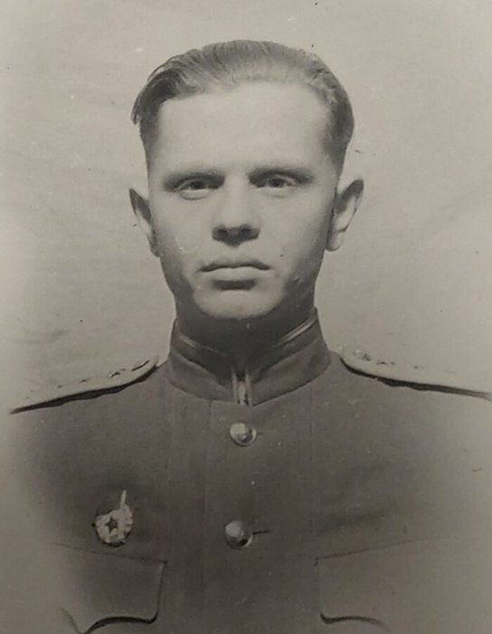
1922 — 1993
РакитянскийИван Александрович
Рассказ о генерал-майоре, его подвигах, вкладе в Победу и послевоенной жизни.
Открыть историю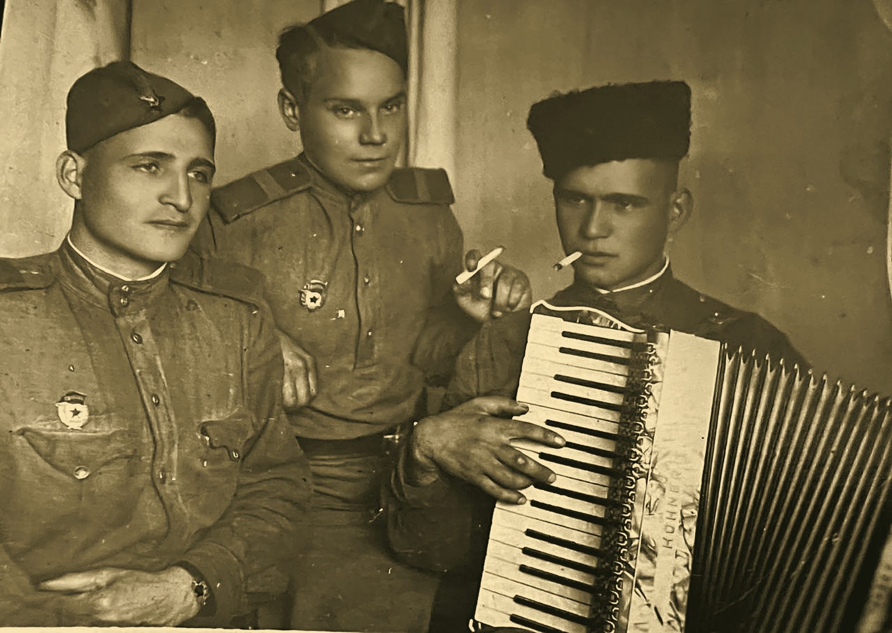
Виртуальное музейное пространство, где собраны личные истории о героях войны и их вкладе в Победу. Здесь вы найдёте фотографии, воспоминания и краткие биографии.
В виртуальном музейном пространстве «Бессмертный полк» мы собираем и публикуем истории родных наших учеников, педагогов и сотрудников — тех, кто воевал, трудился в тылу, пережил оккупацию и внёс свой вклад в Победу. Эти истории, бережно хранимые в семьях, становятся частью истории нашей страны. Это не парадные рассказы о подвигах, а личные истории.
Подробнее о проекте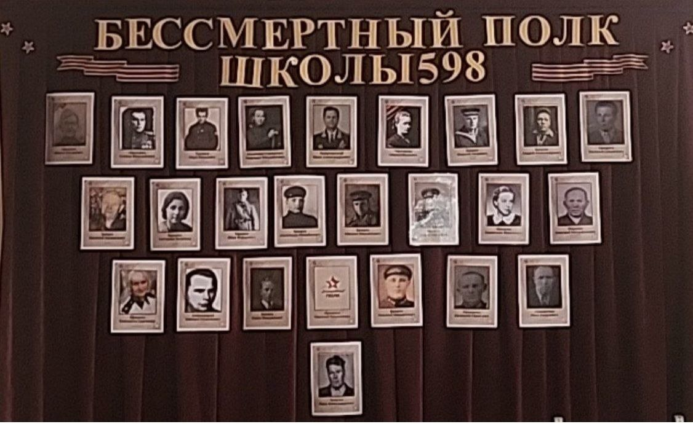
Родные наших учеников, педагогов и сотрудников. Нажмите на портрет, чтобы открыть лист героя.
Открыть весь полк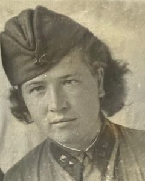
Гавриш А. М.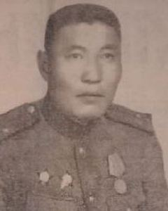
Дондоков Д. Д.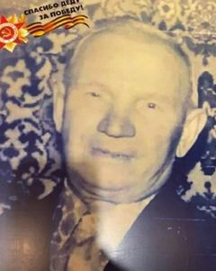
Зайцев В. В.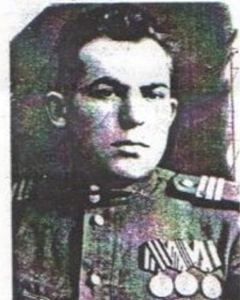
Иванькин С. М.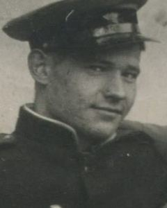
Катышев А. Н.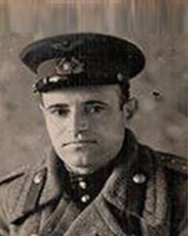
Княжев М. М.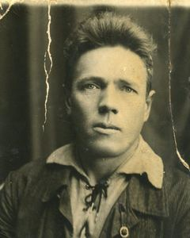
Колесов А. А.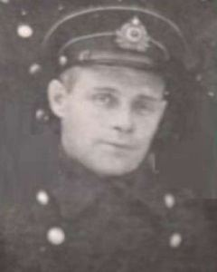
Лазеба М. М.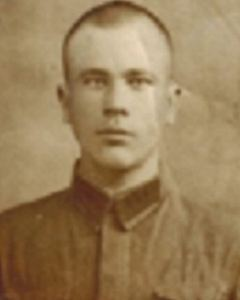
Майстер Д. М.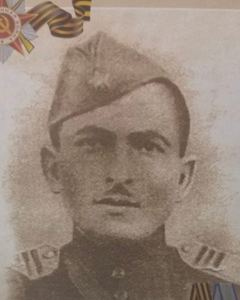
Меликян М. В.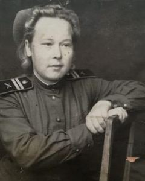
Михеева (Старикова) Н. М.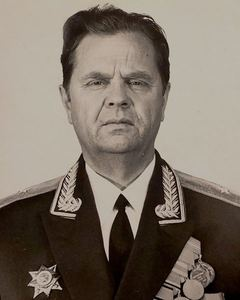
Ракитянский И. А.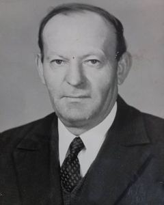
Стадник А. Д.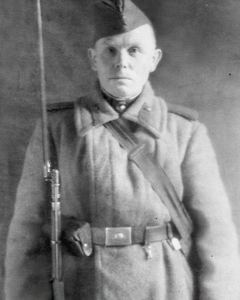
Торопов И. Ф.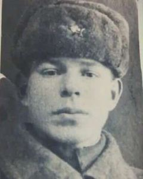
Федоров А. П.Чистякова М. И.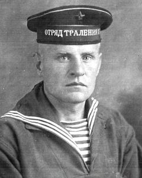
Буршев Ф. П.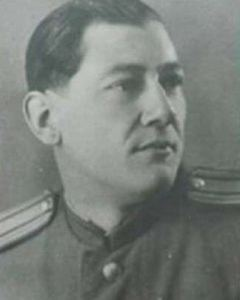
Войцеховский Н. К.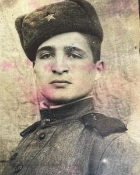
Гавриш И. А.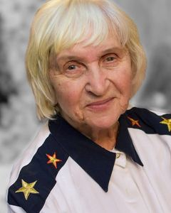
Ефимова Е. С.Замышляев И. А.Ивченков Н. Л.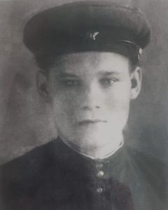
Квачук А. М.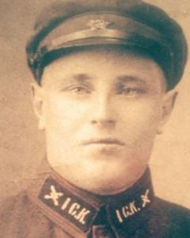
Княжев Н. М.Крахмаль А. Д.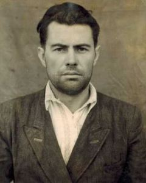
Лукьянчук Ф. Ф.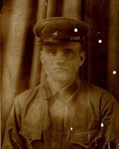
Максюта Д. Н.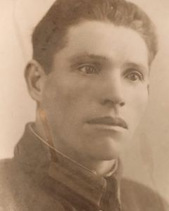
Митюков Д. П.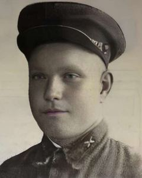
Новиков Т. О.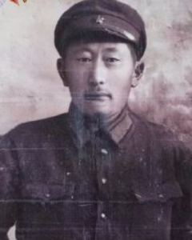
Ринчинов Ж.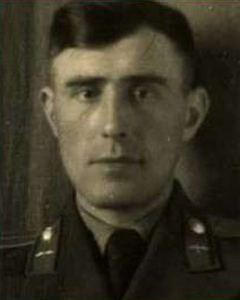
Телегин А. Ф.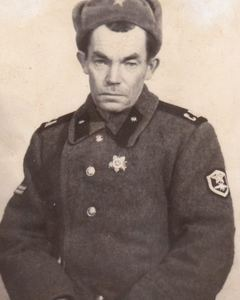
Торопов К. И.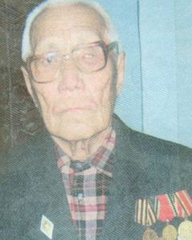
Цыденов А. Ц.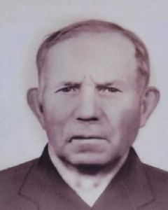
Широких Д. М.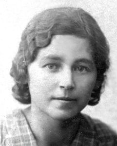
Буршева А. П.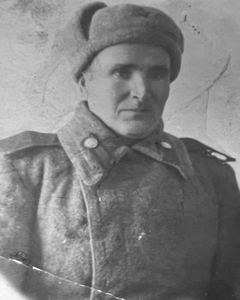
Гавриш А. А.Громова С. В.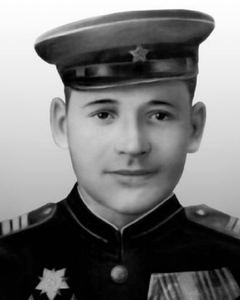
Жевтун И. Ф.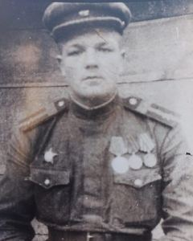
Иванов И. Г.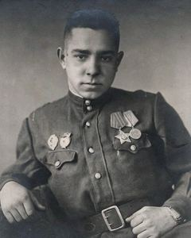
Игнатьев М. Н.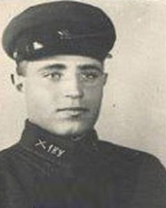
Княжев А. М.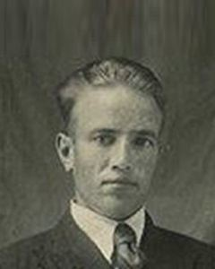
Княжев П. М.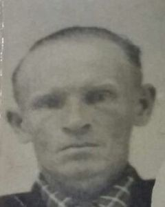
Кучевасов А. Е.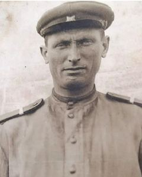
Лыков Г. Ф.Машкин С. Н.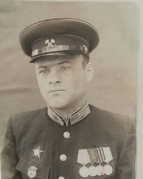
Михеев П. И.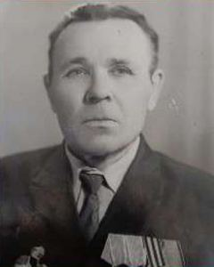
Парфенов М. В.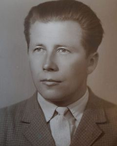
Смирнов В. С.Телегин И. А.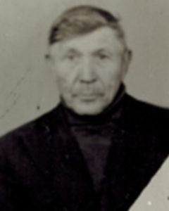
Трачук И. Н.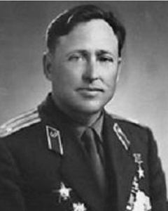
Чарков Т. Н.Яблокова В. Ф.Читайте рассказы, смотрите видеорассказы потомков о жизни людей, повлиявших на нашу историю. Каждая история уникальна.

1922 — 1993
Рассказ о генерал-майоре, его подвигах, вкладе в Победу и послевоенной жизни.
Открыть историю

1917 — 1978
История начальника штаба объединённых партизанских войск, рассказанная его правнуком.
Открыть историю Машкин Сергей НиколаевичО своём прадеде рассказывает Александр Машкин, 2 «В» класс
Машкин Сергей НиколаевичО своём прадеде рассказывает Александр Машкин, 2 «В» класс
 Максюта Дмитрий НестеровичО своём прадеде рассказывает Семён Носков, 2 «В» класс
Максюта Дмитрий НестеровичО своём прадеде рассказывает Семён Носков, 2 «В» класс
 Громова Серафима ВасильевнаО своей прабабушке рассказывает Вера Бирюкова, 6 «В» класс
Громова Серафима ВасильевнаО своей прабабушке рассказывает Вера Бирюкова, 6 «В» класс
 Лазеба Михаил МакаровичО своём прадеде рассказывает Василиса Аборенко, 6 «В» класс
Лазеба Михаил МакаровичО своём прадеде рассказывает Василиса Аборенко, 6 «В» класс
Делитесь историями о своих героях. Три шага — и ваш герой встанет в строй.
Найдите личные истории о родственниках, участвовавших во Второй мировой войне.
Соберите фотографии, воспоминания и краткие биографии, внесите информацию по плану. Анкету можно заполнить прямо на сайте.
Заполнить анкетуПрисылайте материалы в удобном для вас формате на почту m.dohnevskaya@s598.ru, приносите в кабинет истории № 32 или в школьный музей.

Помогите сохранить эти истории, чтобы будущие поколения помнили о жертвах, принесённых ради нашей свободы. Ваш вклад очень важен.
Мы собираем и сохраняем воспоминания о героях, чтобы будущие поколения могли узнать об их подвигах.
Память о тех, кто боролся за свободу страны, помогает нам сохранить уважение к их подвигам и жертвам.
Каждый может поделиться историей своего героя и внести свой вклад в сохранение памяти о прошлом.
Напишите нам, чтобы поделиться историей своего героя или задать вопрос.
Написать письмо